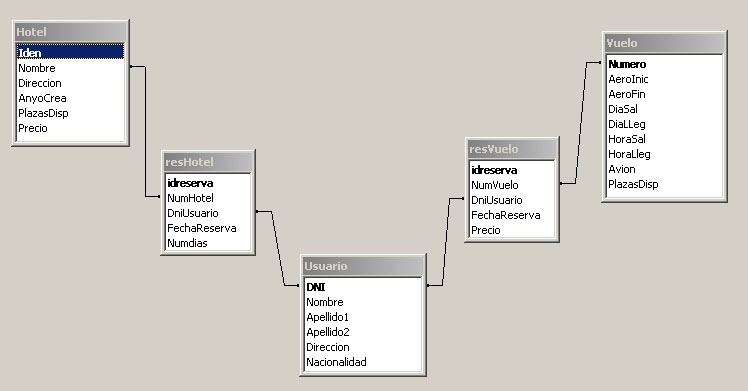
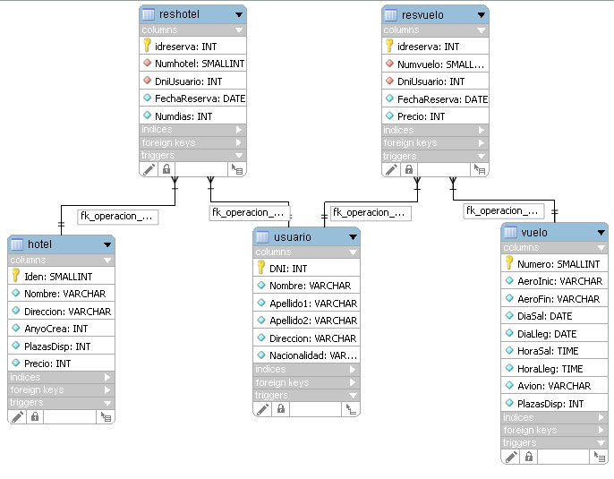

Ejercicios de introducción a JDBC
Base de datos a usar
Para los primeros ejercicios vamos a utilizar el SGBD MySQL. Descargaros el fichero comprimido de la primera sesión. La BD está disponible en el proyecto de Eclipse. Es un fichero de texto con los comandos SQL para generar la BD. Para crear la BD ejecutáis la tarea Ant initBD, que se encuentra en la carpeta db. Es una base de datos muy sencilla donde tenemos usuarios de una agencia de viajes y los vuelos disponibles. También se mantendrá los datos de quién ha reservado un vuelo. La estructura de la BD es la siguiente:  
Obtención de una conexión y objetos del sistema
Como ya hemos visto en teoría, podemos obtener una conexión directamente con el DriverManager. Sin embargo, es conveniente usar algún mecanismo para que un posible cambio de la base de datos, nos afecte lo menor posible. No vamos a entrar aquí en las distintas formas de hacerlo, simplemente veremos un ejemplo concreto. Váis a usar el patrón singleton. Para ello, usaréis una clase, FuenteDatos, cuyo constructor será privado, es decir, no se puede instanciar. La clase tendrá un miembro que es un objeto de la misma clase, FuenteDatos, que tiene que ser privado a la clase y estático. Usaremos un método estático para obtener una referencia a dicho objeto. En ese método, si el objeto no ha sido creado, se crea. Si ha sido previamente creado se devuelve una referencia. También dispondremos de un método público, getConnection que será el encargado de devolver una conexión, usando el DriverManager.
También debéis crear los Value Objects para los objetos que vamos a usar. Tenéis que crear tres clases, Usuario, Hotel y Vuelo, con los datos de los campos de las tablas y sus correspondientes getter y setter. Usad la utilidad de Eclipse que los crea directamente. Por último, cread los DAO para los anteriores objetos. Implementad un método en cada DAO que devuelva todos los registros de la tabla (getAllUsuarios, getAllHoteles y getAllVuelos). Estos métodos devuelven un ArrayList de objetos de la clase correspondiente.